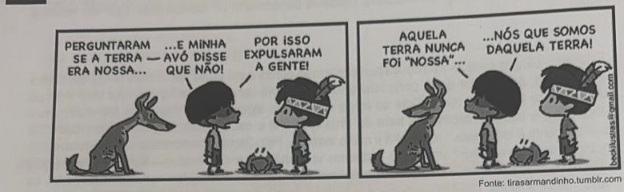

Professores: Matheus e Maria Teresa
Leia o texto abaixo e responda ao que se pede:
Um mover de olhos, brando e piedoso,
sem ver de quê; um riso brando e honesto,
quase forçado, um doce e humilde gesto,
de qualquer alegria duvidoso;
um despejo quieto e vergonhoso;
um desejo gravíssimo e modesto;
um pura bondade manifesto
indício da alma, limpo e gracioso;
um encolhido ousar, uma brandura;
um medo sem ter culpa, um ar sereno;
um longo e obediente sofrimento:
Esta foi a celeste formosura
da minha Circe, e o mágico veneno
que pôde transformar meu pensamento.
Luís de Camões (1524-1580)
Vocabulário: Circe: na mitologia grega, uma feiticeira, ou, em versões racionalizadas do mito, uma
especialista em venenos.
Explique o significado do último terceto — que revela traços da poesia clássica renascentista ao se valer da figura de Circe. Qual é a ideia apresentada nesses versos, a partir da comparação da mulher com a feiticeira?
Leia o fragmento abaixo e responda ao que se pede:
Cessem do sábio Grego e do Troiano
As navegações grandes que fizeram;
Cale-se de Alexandre e de Trajano
A fama das vitórias que tiveram;
Que eu canto o peito ilustre Lusitano,
A quem Neptuno e Marte obedeceram.
Cesse tudo o que a Musa antiga canta,
Que outro valor mais alto se alevanta.
A oitava anterior constitui a terceira estrofe de OS LUSÍADAS, de Luís de Camões, poema épico publicado em 1572, obra máxima do Classicismo português. O tipo de verso que Camões empregou é de origem italiana e fora introduzido na Literatura Portuguesa algumas décadas antes, por Sá de Miranda. Quanto ao conteúdo, o poema Os lusíadas toma como ponto de referência um episódio da História de Portugal. Baseado nestes comentários e em seus próprios conhecimentos, releia a estrofe citada e indique:
a) o episódio da História de Portugal que serve de núcleo narrativo ao poema;
b) o modo como o poeta engrandece os portugueses, a partir de um breve resumo do que ele diz na oitava transcrita.
Leia a oitava transcrita abaixo e responda ao que se pede:
Tu, só tu, puro amor, com força crua,
Que os corações humanos tanto obriga,
Deste causa à molesta morte sua,
Como se fora pérfida inimiga.
Se dizem, fero Amor, que a sede tua
Nem com lágrimas tristes se mitiga,
É porque queres, áspero e tirano,
Tuas aras banhar em sangue humano.
(Camões, "Os Lusíadas" - episódio de Inês de Castro)
Molesta = lastimosa; funesta. Pérfida = desleal; traidora. Fero = feroz; sanguinário; cruel. Mitiga =
alivia; suaviza; aplaca. Ara = altar; mesa para sacrifícios religiosos.
a) Considerando-se a forte presença da cultura da Antiguidade Clássica em "Os Lusíadas", a que se pode referir o vocábulo "Amor", grafado com maiúscula, no 5º verso?
b) Explique o verso "Tuas aras banhar em sangue humano", relacionando-o à história de Inês de Castro.
A Carta de Pero Vaz de Caminha é apontada por Alfredo Bosi, em sua História Concisa da Literatura Brasileira (Cultrix, 1994), como uma das principais manifestações de uma literatura de viagens, que se tornou típica no período da Literatura Brasileira denominada de Quinhentista. Leia um trecho a seguir:
Esta terra, Senhor, parece-me que, da ponta que mais contra o sul vimos, até à outra ponta que contra o norte vem, de que nós deste porto houvemos vista, será tamanha que haverá nela bem vinte ou vinte e cinco léguas de costa. Traz ao longo do mar em algumas partes grandes barreiras, umas vermelhas, e outras brancas; e a terra de cima toda chã e muito cheia de grandes arvoredos. De ponta a ponta é toda praia... muito chã e muito formosa. Pelo Sertão nos pareceu, vista do mar, muito grande; porque a estender olhos, não podíamos ver senão terra e arvoredos -- terra que nos parecia muito extensa. Até agora não pudemos saber se há ouro ou prata nela, ou outra coisa de metal, ou ferro; nem lha vimos. Contudo a terra em si é de muito bons ares frescos e temperados como os de Entre-Douro-e-Minho, porque neste tempo d'agora assim os achávamos como os de lá. Águas são muitas; infinitas. Em tal maneira é graciosa que, querendo-a aproveitar, dar-se-á nela tudo; por causa das águas que tem! Contudo, o melhor fruto que dela se pode tirar parece-me que será salvar esta gente. E esta deve ser a principal semente que Vossa Alteza em ela deve lançar.
Carta a El Rei D. Manuel, Dominus: São Paulo, 1963
Neste trecho, é possível compreender de que modo os recém-chegados ao território que hoje é chamado de Brasil avaliavam as pessoas que aqui encontraram.
Qual passagem do texto permite identificar essa avaliação? Explique.
As Tiras do Armandinho constituem uma série de quadrinhos brasileira protagonizada por um menino de cabelo azul chamado Armandinho. Leia uma delas a seguir:

Fonte: tirasarmandinho.tumblr.com
Na tirinha, Armandinho escuta uma criança indígena, que reflete acerca da noção de "terra".
Qual a diferença de sentido atribuído à "terra" em relação ao sentido da mesma palavra na Carta da Caminha?
Leia os textos extraídos de Dom Casmurro, de Machado de Assis. O capítulo 132 diz respeito à personagem Ezequiel.
Capítulo 132 - O DEBUXO E O COLORIDO
Nem só os olhos, mas as restantes feições, a cara, o corpo, a pessoa inteira, iam-se apurando com o tempo. Eram como um debuxo primitivo que o artista vai enchendo e colorindo aos poucos, (...) a mudança fez-se, não à maneira de teatro, fez-se como a manhã que aponta vagarosa, primeiro que se possa ler uma carta, depois lê-se a carta na rua, em casa, no gabinete, sem abrir as janelas; a luz coada pelas persianas basta a distinguir as letras. Li a carta, mal a princípio e não toda, depois fui lendo melhor. Fugia-lhe, é certo, metia o papel no bolso, corria a casa, fechava-me, não abria as vidraças, chegava a fechar os olhos. Quando novamente abria os olhos e a carta, a letra era clara e a notícia claríssima.
Escobar vinha assim surgindo da sepultura, do seminário e do Flamengo para se sentar comigo à mesa, receber-me na escada, beijar-me no gabinete de manhã, ou pedir-me à noite a bênção do costume.
Capítulo 40 - UMA ÉGUA
A imaginação foi a companheira de toda a minha existência, viva, rápida, inquieta, alguma vez tímida e amiga de empacar, as mais delas capaz de engolir campanhas e campanhas, correndo. Creio haver lido em Tácito que as éguas iberas concebiam pelo vento, se não foi nele, foi noutro autor antigo, que entendeu guardar essa crendice nos seus livros. Neste particular, a minha imaginação era uma grande égua ibera; a menor brisa lhe dava um potro, que saía logo cavalo de Alexandre. (...)
a) Em que reside a angústia de Bentinho, no primeiro texto? Explique.
b) Considerando a metáfora utilizada pelo narrador no capítulo 40 e comparando os dois textos acima, é possível concluir se houve ou não traição? Por quê?